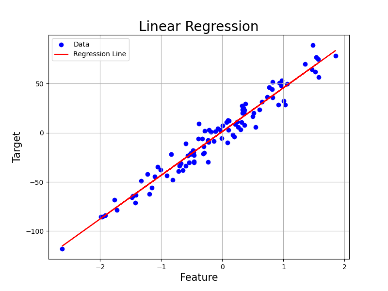

線形回帰は，ある目的データを別のいくつかの観測データの線形和として表すことで，両者の関係性を説明し，新たに得られた観測データを元に未知の目的データを推定する用途で用いるモデルです．
線形単回帰モデル
線形単回帰モデルとは，2つのデータ変数 (x x x y y y
統計の基礎 で既にふれているように，その基本は中学校あたりで学習済みです．
Pythonコード
X, y, coef = make_regression( n_samples= 100 , n_features= 1 , noise= 10 , coef= True , random_state= 42 )
model = LinearRegression( )
model. fit( X, y)
y_pred = model. predict( X)
plt. figure( figsize= ( 8 , 6 ) )
plt. scatter( X, y, color= 'blue' , label= 'Data' )
plt. plot( X, y_pred, color= 'red' , label= 'Regression Line' )
plt. title( 'Linear Regression' , fontsize= 20 )
plt. xlabel( 'Feature' , fontsize= 15 )
plt. ylabel( 'Target' , fontsize= 15 )
plt. legend( )
plt. grid( True )
plt. savefig( '../figures/linear.png' )

この図では，てきとうに作成したデータ点に対して単回帰を行い，得られた線 (回帰線) を赤で引いてあります．良い感じですね．たしかにそれっぽいところに線が引かれています．
概要はこの程度で十分なので，実際にモデルの中身を見ていきます．
まず，単回帰の場合は説明変数 x x x 目的変数 y y y
y = β 0 + β 1 x \begin{align}
y = \beta_0 + \beta_1 x
\end{align} y = β 0 + β 1 x
というシンプルな関係性を仮定します．ここで β 0 , 1 \beta_{0,1} β 0 , 1 β 1 \beta_1 β 1 回帰係数 といいます．発想は初等数学でやる y = a x + b y=ax+b y = a x + b ( β 0 , β 1 ) (\beta_0, \beta_1) ( β 0 , β 1 )
ただ，実際には測定の誤差や，今回考えていない他の要因 (x 2 , 3 , . . . x_{2,3,...} x 2 , 3 , ... ϵ \epsilon ϵ
従って線形単回帰モデル はデータの組 (標本) の総数を n n n
y i = β 0 + β 1 x i + ϵ i \begin{align}
y_i = \beta_0 + \beta_1 x_i + \epsilon_i
\end{align} y i = β 0 + β 1 x i + ϵ i
という形になります．ここで, i = 1 , . . . , n i . i . d . i = 1,...,n \quad i.i.d. i = 1 , ... , n i . i . d .
言葉にすると，得られた i i i y i y_i y i x i x_i x i β 1 \beta_1 β 1 β 0 \beta_0 β 0 ϵ i \epsilon_i ϵ i ，というモデルです．
回帰係数の推定
では次に，得られた線形単回帰モデルの β 0 , 1 \beta_{0,1} β 0 , 1
最小二乗法
最小二乗法では，
「データに良く当てはまるモデルは，誤差 ϵ i \epsilon_i ϵ i i i i
と考えます．尤もらしいですね．ちなみに，ϵ i \epsilon_i ϵ i
ϵ 1 , . . . , ϵ n i.i.d. E ( ϵ i ) = 0 V ( ϵ i ) = σ 2 \begin{align}
\epsilon_1,...,\epsilon_n \quad \text{i.i.d.}\\
E(\epsilon_i)=0\\
V(\epsilon_i)=\sigma^2
\end{align} ϵ 1 , ... , ϵ n i.i.d. E ( ϵ i ) = 0 V ( ϵ i ) = σ 2
誤差はデータごとに独立で，平均0，分散 σ 2 \sigma^2 σ 2 σ 2 \sigma^2 σ 2
これにより，同時に
y 1 , . . . , y n i.i.d. E ( y i ) = β 0 + β 1 x i V ( y i ) = σ 2 \begin{align}
y_1,...,y_n \quad \text{i.i.d.}\\
E(y_i)=\beta_0 + \beta_1 x_i\\
V(y_i)=\sigma^2
\end{align} y 1 , ... , y n i.i.d. E ( y i ) = β 0 + β 1 x i V ( y i ) = σ 2
となります．
では本題です．
最小二乗法とは，予測値 y i ^ \hat{y_i} y i ^ y i y_i y i を意味し，今回のモデルについて考えると
arg min β 0 , β 1 S = ∑ i = 1 n ϵ i 2 = ∑ i = 1 n { y i − ( β 0 + β 1 x i ) } 2 \argmin_{\beta_0,\beta_1} S = \sum_{i=1}^n \epsilon_i^2 = \sum_{i=1}^n \{ y_i - (\beta_0 + \beta_1 x_i) \}^2 β 0 , β 1 arg min S = i = 1 ∑ n ϵ i 2 = i = 1 ∑ n { y i − ( β 0 + β 1 x i ) } 2
という問題になります．
arg min β 0 , β 1 S \argmin_{\beta_0,\beta_1} S arg min β 0 , β 1 S S S S β 0 , β 1 \beta_0, \beta_1 β 0 , β 1 S S S β 0 , β 1 \beta_0, \beta_1 β 0 , β 1 y i y_i y i x i x_i x i y i ^ \hat{y_i} y i ^ i i i S S S
arg min β 0 , β 1 S \argmin_{\beta_0,\beta_1} S arg min β 0 , β 1 S
変数それぞれについて，関数 S S S β 0 , β 1 \beta_0, \beta_1 β 0 , β 1
∂ S ( β 0 , β 1 ) ∂ β 0 = − 2 ∑ i = 1 n ( y i − β 1 x i − β 0 ) ∂ S ( β 0 , β 1 ) ∂ β 1 = − 2 ∑ i = 1 n x i ( y i − β 1 x i − β 0 ) \begin{align}
\frac{\partial S(\beta_0, \beta_1)}{\partial \beta_0} = -2 \sum_{i=1}^n (y_i - \beta_1 x_i -\beta_0)\\
\frac{\partial S(\beta_0, \beta_1)}{\partial \beta_1} = -2\sum_{i=1}^n x_i(y_i -\beta_1 x_i- \beta_0)
\end{align} ∂ β 0 ∂ S ( β 0 , β 1 ) = − 2 i = 1 ∑ n ( y i − β 1 x i − β 0 ) ∂ β 1 ∂ S ( β 0 , β 1 ) = − 2 i = 1 ∑ n x i ( y i − β 1 x i − β 0 )
となります．で，こいつらの最小値を求めるわけなのでそれぞれを = 0 =0 = 0
β 1 ∑ i = 1 n x i + β 0 n = ∑ i = 1 n y i β 1 ∑ i = 1 n x i 2 + β 0 ∑ i = 1 n x i = ∑ i = 1 n x i y i \begin{align}
\beta_1 \sum_{i=1}^n x_i + \beta_0 n = \sum_{i=1}^n y_i \\
\beta_1 \sum_{i=1}^n x_i^2 + \beta_0 \sum_{i=1}^n x_i = \sum_{i=1}^n x_i y_i
\end{align} β 1 i = 1 ∑ n x i + β 0 n = i = 1 ∑ n y i β 1 i = 1 ∑ n x i 2 + β 0 i = 1 ∑ n x i = i = 1 ∑ n x i y i
が求められます．
式(12)を n n n
β 1 ∑ i = 1 n x i n + β 0 = ∑ i = 1 n y i n β 1 x ˉ + β 0 = y ˉ ∴ β 0 ^ = y ˉ − β 1 ^ x ˉ \frac{\beta_1\sum_{i=1}^n x_i}{n} + \beta_0 = \frac{\sum_{i=1}^n y_i}{n}\\
\beta_1 \bar{x} + \beta_0 = \bar{y}\\
\therefore \hat{\beta_0} = \bar{y} - \hat{\beta_{1}} \bar{x} n β 1 ∑ i = 1 n x i + β 0 = n ∑ i = 1 n y i β 1 x ˉ + β 0 = y ˉ ∴ β 0 ^ = y ˉ − β 1 ^ x ˉ
となります．x ˉ \bar{x} x ˉ x x x n n n
途中式
β 1 ∑ i = 1 n x i 2 + ( − β 1 x ˉ + y ˉ ) ∑ i = 1 n x i = ∑ i = 1 n x i y i β 1 ( ∑ i = 1 n x i 2 n − x ˉ ∑ i = 1 n x i n ) = ∑ i = 1 n x i y i n − y ˉ ∑ i = 1 n x i n a ( x 2 ˉ − x ˉ 2 ) = x y ˉ − y ˉ x ˉ \beta_1\sum_{i=1}^n x_i^2 + (-\beta_1\bar{x} + \bar{y})\sum_{i=1}^n x_i = \sum_{i=1}^n x_i y_i \nonumber\\
\beta_1(\frac{\sum_{i=1}^n x_i^2}{n} - \bar{x}\frac{\sum_{i=1}^n x_i}{n}) = \frac{\sum_{i=1}^n x_i y_i}{n} - \bar{y}\frac{\sum_{i=1}^n x_i}{n}\\
a(\bar{x^2} - \bar{x}^2) = \bar{xy} - \bar{y}\bar{x}\\ β 1 i = 1 ∑ n x i 2 + ( − β 1 x ˉ + y ˉ ) i = 1 ∑ n x i = i = 1 ∑ n x i y i β 1 ( n ∑ i = 1 n x i 2 − x ˉ n ∑ i = 1 n x i ) = n ∑ i = 1 n x i y i − y ˉ n ∑ i = 1 n x i a ( x 2 ˉ − x ˉ 2 ) = x y ˉ − y ˉ x ˉ
∴ β 1 = x y ˉ − y ˉ x ˉ x 2 ˉ − x ˉ 2 \begin{align}
\therefore \beta_1 = \frac{\bar{xy} - \bar{y}\bar{x}}{\bar{x^2} - \bar{x}^2}
\end{align} ∴ β 1 = x 2 ˉ − x ˉ 2 x y ˉ − y ˉ x ˉ
と，β 1 \beta_1 β 1 β 0 \beta_0 β 0
β 1 = x y ˉ − y ˉ x ˉ x 2 ˉ − x ˉ 2 = S x y S x x β 0 = − β 1 x ˉ + y ˉ \begin{align}
\beta_1 = \frac{\bar{xy} - \bar{y}\bar{x}}{\bar{x^2} - \bar{x}^2} = \frac{S_{xy}}{S_{xx}}\\
\beta_0 = -\beta_1\bar{x} + \bar{y}
\end{align} β 1 = x 2 ˉ − x ˉ 2 x y ˉ − y ˉ x ˉ = S xx S x y β 0 = − β 1 x ˉ + y ˉ
と，β 0 , β 1 \beta_0, \beta_1 β 0 , β 1 β 0 \beta_0 β 0
β 0 = σ x y σ x 2 \beta_0 = \frac{\sigma_{xy}}{\sigma_x^2} β 0 = σ x 2 σ x y
最尤法
次は最尤法での求め方です．最尤法では，誤差 ϵ i \epsilon_i ϵ i N ( 0 , σ 2 ) N(0,\sigma^2) N ( 0 , σ 2 )
このとき，y i y_i y i N ( β 0 + β 1 x i , σ 2 ) N(\beta_0 + \beta_1 x_i, \sigma ^2) N ( β 0 + β 1 x i , σ 2 ) y i y_i y i
f ( y i ; β 0 , β 1 , σ 2 ) = 1 2 π σ 2 exp [ − { y i − ( β 0 + β 1 x i ) } 2 2 σ 2 ] \begin{align}
f(y_i; \beta_0, \beta_1, \sigma^2) = \frac{1}{\sqrt{2\pi\sigma^2}}\exp{[- \frac{\{y_i - (\beta_0 + \beta_1 x_i)\}^2}{2\sigma^2}]}
\end{align} f ( y i ; β 0 , β 1 , σ 2 ) = 2 π σ 2 1 exp [ − 2 σ 2 { y i − ( β 0 + β 1 x i ) } 2 ]
になります．以降，面倒なので f ( y i ; β 0 , β 1 , σ 2 ) f(y_i; \beta_0, \beta_1, \sigma^2) f ( y i ; β 0 , β 1 , σ 2 ) f ( y i ) f(y_i) f ( y i ) 尤度 ) の対数 (対数尤度関数 ) が最大になる変数 (この場合はβ 0 , β 1 \beta_0, \beta_1 β 0 , β 1
今，y i y_i y i
L ( β 0 , β 1 , σ 2 ) = ∏ i = 1 n f ( y i ) \begin{align}
L(\beta_0, \beta_1, \sigma^2) = \prod_{i=1}^n f(y_i)
\end{align} L ( β 0 , β 1 , σ 2 ) = i = 1 ∏ n f ( y i )
なので，対数尤度関数は
log ( L ( β 0 , β 1 , σ 2 ) ) = ∑ i = 1 n log f ( y i ) = − n 2 log ( 2 π σ 2 ) − 1 2 σ 2 ∑ i = 1 n { y i − ( β 0 + β 1 x i ) } 2 \begin{align}
\log(L(\beta_0, \beta_1, \sigma^2)) = \sum_{i=1}^n \log f(y_i)\\
= -\frac{n}{2}\log(2\pi\sigma^2)-\frac{1}{2\sigma^2}\sum_{i=1}^n \{y_i-(\beta_0 + \beta_1x_i) \}^2
\end{align} log ( L ( β 0 , β 1 , σ 2 )) = i = 1 ∑ n log f ( y i ) = − 2 n log ( 2 π σ 2 ) − 2 σ 2 1 i = 1 ∑ n { y i − ( β 0 + β 1 x i ) } 2
となります．あとは最小二乗法の時同様に偏微分をしていきます．すると
1 σ 2 ( ∑ i = 1 n y i − n β 0 − β 1 ∑ i = 1 n x i ) = 0 1 σ 2 ( ∑ i = 1 n x i y i − β 0 ∑ i = 1 n x i − β 1 ∑ i = 1 n x i 2 ) = 0 − n 2 σ 2 + 1 2 ( σ 2 ) 2 ∑ i = 1 n { y i − ( β 0 + x i β 1 ) } 2 = 0 \begin{align}
\frac{1}{\sigma^2}(\sum_{i=1}^n y_i- n\beta_0 - \beta_1\sum_{i=1}^n x_i)=0\\
\frac{1}{\sigma^2}(\sum_{i=1}^n x_i y_i - \beta_0\sum_{i=1}^n x_i - \beta_1 \sum_{i=1}^nx_i^2)=0\\
-\frac{n}{2\sigma^2} + \frac{1}{2(\sigma^2)^2}\sum_{i=1}^n \{y_i - (\beta_0 + x_i\beta_1) \}^2=0
\end{align} σ 2 1 ( i = 1 ∑ n y i − n β 0 − β 1 i = 1 ∑ n x i ) = 0 σ 2 1 ( i = 1 ∑ n x i y i − β 0 i = 1 ∑ n x i − β 1 i = 1 ∑ n x i 2 ) = 0 − 2 σ 2 n + 2 ( σ 2 ) 2 1 i = 1 ∑ n { y i − ( β 0 + x i β 1 ) } 2 = 0
がでてきます．これらを解くと，最小二乗法の場合と同様に
β 1 = x y ˉ − y ˉ x ˉ x 2 ˉ − x ˉ 2 = S x y S x x β 0 = − β 1 x ˉ + y ˉ \begin{align}
\beta_1 = \frac{\bar{xy} - \bar{y}\bar{x}}{\bar{x^2} - \bar{x}^2} = \frac{S_{xy}}{S_{xx}}\\
\beta_0 = -\beta_1\bar{x} + \bar{y}
\end{align} β 1 = x 2 ˉ − x ˉ 2 x y ˉ − y ˉ x ˉ = S xx S x y β 0 = − β 1 x ˉ + y ˉ
が得られます．